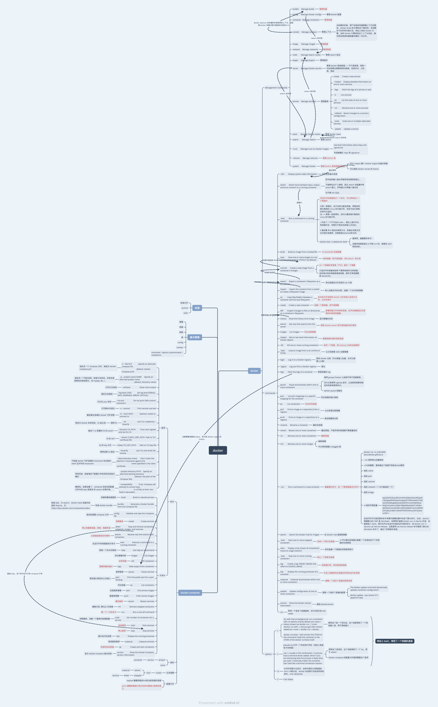

常用命令12345678910111213141516171819202122232425262728293031323334353637383940414243444546474849505152535455565758596061626364656667686970717273747576777879808182838485868788899091docker --helpdocker-compose --help# 后台启动当前应用docker-compose -f docker-compose.yml up -d# 暂停当前应用docker-compose -f docker-compose.yml stop# Stop and remove the deployment(network, containers, and volumes）docker-compose down -v# 关闭容器且删除容器、网络、镜像和卷docker-compose -f docker-compose.yml kill && docker-compose -f docker-compose.yml down# 在 docker 容器内执行此命令，则可以解决 docker 容器解析不了特定网址的问题printf "nameserver 127.0.1.1\nsearch nvidia.com" > /etc/resolv.conf# -it：这是两个参数，一个是 -i：交互式操作，一个是 -t 终端。我们这里打算进入 bash 执行一些命令并查看返回结果，因此我们需要交互式终端。# * --rm：这个参数是说容器退出后随之将其删除。默认情况下，为了排障需求，退出的容器并不会立即删除，除非手动 docker rm。我们这里只是随便执行个命令，看看结果，不需要排障和保留结果，因此使用 --rm 可以避免浪费空间。* ubuntu:14.04：这是指用 ubuntu:14.04 镜像为基础来启动容器。* bash：放在镜像名后的是命令，这里我们希望有个交互式 Shell，因此用的是 bash。# 这要求容器是是以-d 开始 run 的，或者由 start 再启动的。docker run -it --rm ubuntu:14.04 bash# 如何启动死容器docker ps -a 列出所有容器（无论死活）# 然后启动一个容器 docker start 34625# 然后进入这个容器docker exec -it 34625 /bin/bash# 进行一番修改，查看当前容器的修改状况docker diff 34625759feb9# 提交镜像$ docker commit \ --author "Tao Wang <twang2218@gmail.com>" \ --message "修改了默认网页" \ webserver \ nginx:v2sha256:07e33465974800ce65751acc279adc6ed2dc5ed4e0838f8b86f0c87aa1795214# 如何不用反斜杠换行符来提交镜像docker commit -a "runoob.com" -m "my apache" a404c6c174a2 mymysql:v1# 用交互的方式进入一个在后台运行的容器# 这要求容器是是以-d 开始 run 的，或者由 start 再启动的。docker exec -it webserver bash# 用端口映射的方式启动 friendlyhello镜像。docker run -p 4000:80 friendlyhello# 提供实名容器启动，用 docker run -d 可以保证无阻塞地后台运行一个 docker 容器，而没有必须要 -it 选项的烦恼docker run --name web2 -d -p 81:80 nginx:v2# 在这里，docker 的 t不只是意味着 tag，也意味着名字。docker build -t friendlyhello .# 在容器启动以前可以指定它的映射，容器启动以后就不行了（也就是 docker start 不能指定端口映射和物理卷映射）。docker run -i -p 22 -p 8000:80 -m /data:/data -t <foo/live> /bin/bash# 关闭容器# 此外，当Docker容器中指定的应用终结时，容器也自动终止。 用户通过 exit 命令或 Ctrl+d 来退出终端时，所创建的容器立刻终止。# 处于终止状态的容器，可以通过 docker start 命令来重新启动。docker stop 容器名# 命令会将一个运行态的容器终止，然后再重新启动它docker restart 容器名# 删除一个处于终止状态的容器docker rm trusting_newton# 删除所有的包括还在运行中的容器docker rm $(docker ps -a -q)# 从官服拉镜像docker pull centos# 从私服拉镜像docker pull hub.xiaojukeji.com/mfe/nodejs-v6.10.3:latest# 查看当前容器的端口映射状况docker port a6f656325a0d# 删除一个镜像docker rmi ubuntu# 可以 strace 的 run 方法。这个方法应该降低了 security confine。docker run -it --security-opt seccomp:unconfined oom:v0.0.1 /bin/bash# 增加 strace 能力docker run -it --security-opt seccomp:unconfined --cap-add=SYS_PTRACE oom:v0.0.1 /bin/bash# 删除无用的 docker 网络docker network prune docker.xmind